Write your First Game in C++
By: Abhilekh Gautam
Are you tired of writing console based programs in C++ and want to use C++ for more fun, then this book is for you. At the end of this book you will have a fully fledged working 2D game for you.To write this game we will use olc::PixelGameEngine and some Modern C++.
For more about olc::PixelGameEngine visit here.
The entire source code of the game is available here.
Prerequisites
- A Simple Understanding of C++ would work. You should be aware of Inheritance in C++. We will try to use as much modern C++ as Possible.
Setup
Since we will be using olc::PixelGameEngine for this purpose we will need to set it up. This won't be covered in this book as everything about that is available in its official docs.
For Linux
To get things done on Linux, Visit: Compiling on Linux
For Windows
To get things done on Windows, Visit: Compiling on Windows
Foreword
Let me tell you here, I am neither a Game Developer nor a C++ Expert. I like writing C++ and I know I am pretty bad at it. If you are here to learn writing production ready code then this is not the right place for you.
But I am sure this won't be a waste of time if you continue till the end. After all we will be writing a 2D game. That should be fun.
Introduction
Welcome to Write your First Game in C++. The main objective of this book is to have some fun with C++. C++ is considered to be difficult and boring by many. The reason to find it boring is many universities (in Nepal) are teaching C++98/03 and are bounding them in writing console based programs which brings the vibe that C++ is useless among many.
This book is to remind you that C++ is not boring at all. You will see why soon. This book also aims to serve as as a teaching (learning) material, for those who want to start having fun with C++ and programming overall.
Who is this book for?
This book is intended for everyone who wish to have fun with C++.
Getting Started
If you have everything setup, Lets begin your Game development journey.
Hello, OLC!
It's time to write your first program using olc::PixelGameEngine. how can we break the tradition, we will start by writing a simple Hello, World program.
Setting up the Project
- Begin by making a directory to store your Code. I'll name it Space Warrior that will be the name of the game we are going to create
- Add Header file
olcPixelGameEngine.hto our current directory which you can download here. - Create a new
.cppfile, name itmain.cppin the current direcotry.
Hello, World!
Add following contents to the main.cpp file.
We begin by including the header olcPixelGameEngine
#define OLC_PGE_APPLICATION
#include "olcPixelGameEngine.h"
Now let us create a new class for our Game, Game it will inherit olc::PixelGameEngine
class Game : public olc::PixelGameEngine
{
public:
Game()
{
sAppName = "Space Warrior";
}
bool OnUserCreate() override
{
// Called once at the start, so create things here
return true;
}
bool OnUserUpdate(float fElapsedTime) override
{
Clear(olc::BLACK);
DrawString(5,5, "Hello, World");
return true;
}
};
Any class that inherits from olc::PixeGameEngine should override two functions, OnUserCreate and OnUserUpdate. Don't worry we will
get into details later.
Now lets write our main function, main function would be very neat
int main()
{
Game game;
if (game.Construct(256, 240, 4, 4))
game.Start();
return 0;
}
Compilation and Running the Program
If you have everything setup as mentioned in the chapter Write your First Game in C++, you should be able to issue following commands in the terminal/command prompt.
For Linux
You should move on to the current directory first.
Compiling
$ g++ -o main main.cpp -lX11 -lGL -lpthread -lpng -lstdc++fs -std=c++17
Running
$ ./main
For Windows
You should move on to the current working directory first.
Compiling
$ g++ -o main.exe main.cpp -luser32 -lgdi32 -lopengl32 -lgdiplus -lShlwapi -ldwmapi -lstdc++fs -static -std=c++17
Running
$ main.exe
That's it now if you run this program, you should see a window with string "Hello, World" being displayed like this:
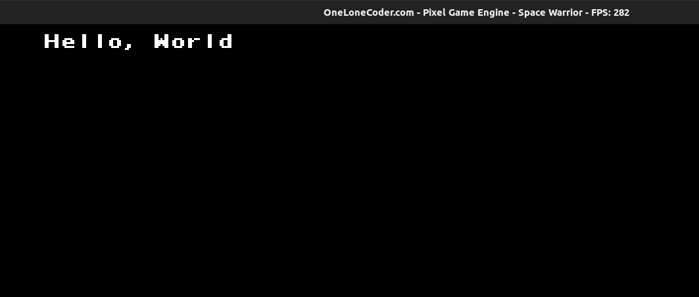
Getting into Details
As mentioned earlier we inherited our class from olc::PixelGameEngine and then we override two functions,
OnUserCreate()
The function OnUserCreate is called only once by the engine at the start.
Let us look at the definition again,
bool OnUserCreate() override
{
// Called once at the start, so create things here
return true;
}
This function returns a bool value, since the function is called only once, we can use this
for the initialization stuff. However at the moment we have nothing to initialize, so we will
just return true from the method.
OnUserUpdate()
This function is called repeatedly by the engine per frame. For smooth transition of the game, we need to keep updating the frame and whenever the frame is updated this function is called.
Let us check out the code of OnUserUpdate method again,
bool OnUserUpdate(float fElapsedTime) override
{
Clear(olc::BLACK);
DrawString(5,5, "Hello, World");
return true;
}
Let us look at the function signature first, it returns a bool value, recieves a float as a
parameter. We call the Clear function inside the function, Clear function clears contents of the
previous frame We then called DrawString function and passed in the x, y coordinates where the string would be displayed, and then the third parameter, Hello, World is the string to be displayed in the screen. We exit the function by returning true.
The main function
int main()
{
Game game;
if (game.Construct(256, 240, 4, 4))
game.Start();
return 0;
}
In the main Function, we first created an object game, of type Game. We then need to tell the engine about the size of window we want to create we do so by using theConstruct method. The Construct method returns true if the construction was successfull and then we call the start method which starts our game engine.
Next up we will look at some useful functions to draw basic shapes using the game engine.
Drawing Basic Shapes
Before we start writing our Game, let us see some useful functions provided by olc pixel game engine that help us in drawing shape.
Note: I won't be providing full working code, just add these codes to the OnUserUpdate function and that would work.
Drawing a Line
To draw a line use the DrawLine Method
DrawLine(5,5, 30, 30);
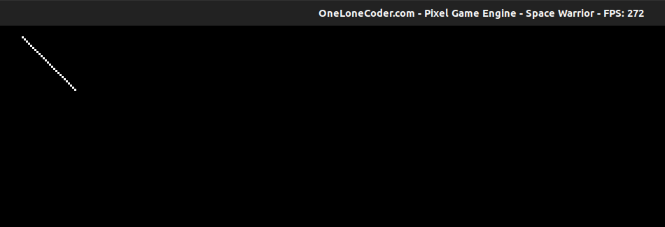
DrawLine has a signature of:
DrawLine(int32_t x1, int32_t y1, int32_t x2, int32_t y2, Pixel p = olc::WHITE, uint32_t pattern = 0xFFFFFFFF)
It simply draws a line from (x1,y1) to (x2,y2)
Drawing a Circle
To draw a circle use the DrawCircle Method
DrawCircle(50, 50, 5);
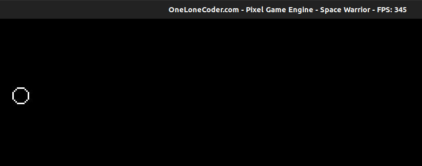
DrawCircle has a signature of
DrawCircle(int32_t x, int32_t y, int32_t radius, Pixel p = olc::WHITE, uint8_t mask = 0xFF)
It simply draws a cirle centered at (x, y) with a radius.
Drawing a Filled Circle
As we might have guessed just call the FillCircle Method
FillCircle(50, 50, 5, olc::RED);
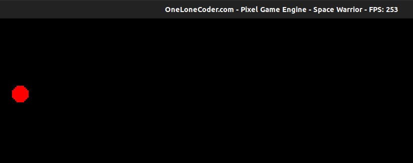
We passed an additional parameter, the color of the pixel to fill with.
Drawing a Rectangle
We use DrawRect method.
DrawRect(5,5, 30, 40);
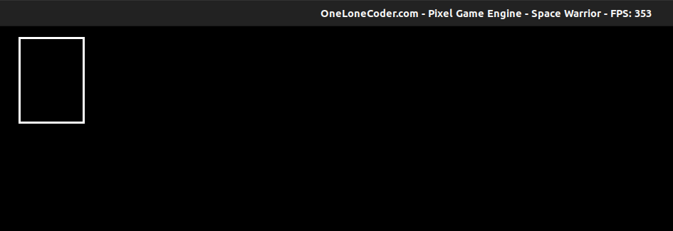
It draws a rectangle at (5,5) with a width of 30 and height of 40.
Drawing a Triangle
We use DrawTriangle method.
DrawTriangle(5,5,20,5, 12,10);
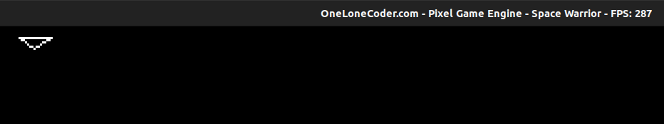
DrawTriangle has following signature:
DrawTriangle(int32_t x1, int32_t y1, int32_t x2, int32_t y2, int32_t x3, int32_t y3, Pixel p = olc::WHITE)
It simply draws a triangle between three points (x1, y1), (x2, y2) and (x3, y3);
Adding Our Player
Now on, we will start working on our game, let us start by adding our main player.
We will use olc::sprite to add our player, just think sprite as an imagebut before this let us initialize some member variables for our class.
class Game : public olc::PixelGameEngine
{
public:
Game()
{
sAppName = "Space Warrior";
}
bool OnUserCreate() override
{
return true;
}
bool OnUserUpdate(float fElapsedTime) override
{
return true;
}
private:
float fPlayerPositionX = 185.0f;
float fPlayerPositionY = 250.0f;
};
Nothing new, just added two variables to denote the player's X and Y coordinates in the screen.
Now download the image provided below (hover and right click), for our player. You can use any image you want
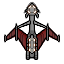
Loading Sprites
class Game : public olc::PixelGameEngine
{
public:
bool OnUserCreate() override
{
sprPlayer = std::make_unique<olc::Sprite>("../sprites/player.png");
return true;
}
bool OnUserUpdate(float fElapsedTime) override
{
Clear(olc::BLACK);
DrawSprite(fPlayerPositionX, fPlayerPositionY, sprPlayer.get());
return true;
}
private:
float fPlayerPositionX = 185.0f;
float fPlayerPositionY = 250.0f;
std::unique_ptr<olc::Sprite> sprPlayer;
};
Don't get scared, sprPlayer is just a pointer, that is very safe to work with.
sprPlayer holds a pointer to object of type olc::Sprite.
We have quite a few changes here, We added,
bool OnUserCreate() override
{
// sprites...
sprPlayer = std::make_unique<olc::Sprite>("../sprites/player.png");
return true;
}
We simply initialized sprEnemy by passing filepath to
std::make_unique<olc::Sprite>(file_path);
Similarly, In the OnUserUpdate method, we added
bool OnUserUpdate() override
{
DrawSprite(fPlayerPositionX, fPlayerPositionY, sprPlayer.get());
return true;
}
We used DrawSprite method to draw the sprite on the screen, we passed in the position of
the player and a pointer contained by sprPlayer, remember I said earlier sprPlayer holds a
pointer to object of type olc::sprite, the get method just return that pointer.
To be on the same page, our main function should look like this
int main()
{
Game game;
if (game.Construct(450, 340, 4, 4))
game.Start();
return 0;
}
Now if you run this program you should see something like this: 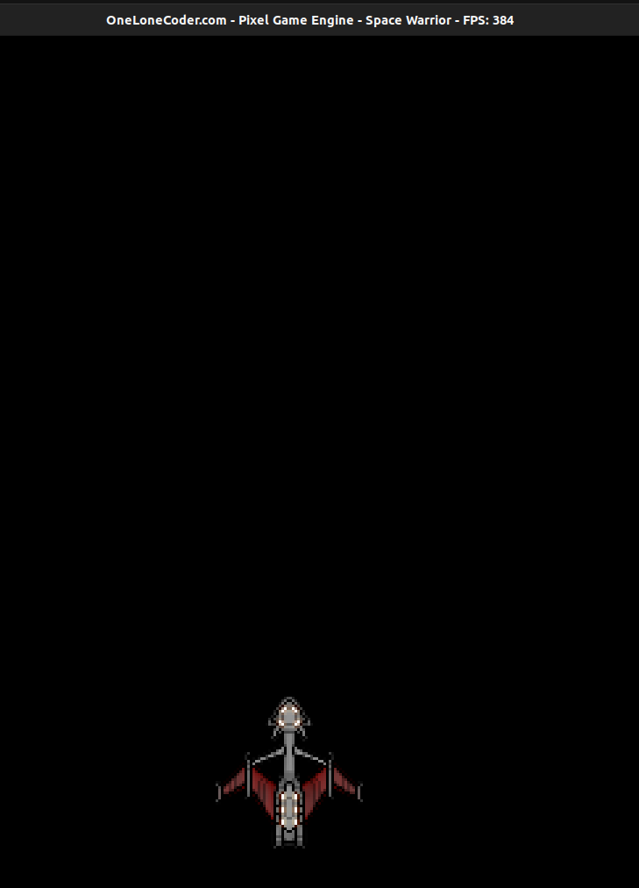
Don't worry if you see some compiler warnings, we will deal with them later.
Next we will add some life to our player, i.e. we will add some movement to the player.
Adding Motion to Player
Now we are going to add life to our player, we will begin by adding motions to the player. But before we start writing some code let us look at the concept behind moving (translating) the player.
Translating a Point
Moving a player means we want to translate the player's position in the 2D plane.
Consider a point in the 2D plane,(x1, y1), now what will you do if you want the point to move by 5 units to the right?
That's simple add 5, to the current position in the X axis, so our new postion will be (x1 + 5, y1).
Similarly to move the player to left we will substract 5, so our new postion will be (x1 - 5, y1).
Notice that we don't change the y coordinate at all because we are dealing with the horizontal motion, so y must be constant here.
Similarly to move the point by 5 units upward, simply subtract 5 to the current position to obtain the new coordinate (x1, y1 - 5).
To move the point 5 units downward, simply add 5 to the current position to obtain the new coordinate (x1, y1 + 5)
To Summarize,
| Current Position | To Left | To Right | Upwards | Downwards |
|---|---|---|---|---|
| (x1, y1) | x1 - 5 | x1 + 5 | y1 - 5 | y1 + 5 |
If you are confused why we subtracted in case of upward motion, just remember the top left corner is (0,0), so moving downwards requires addtion and moving upwards require subtraction.
Handling User Input
We will only move the player when certain keys are pressed, so we will need to check when certain keys are pressed. That is preety easy,
We will use the GetKey function and pass it in the key we are looking for,
lets say the left arrow.
if (GetKey(olc::Key::LEFT).bPressed)
{
std::cout << "Left Arrow was pressed\n";
}
Adding Motion
We need to move the player with some speed, so first we need to create a member variable representing the speed of player.
class Game: public olc::PixelGameEngine{
// same as before
private:
//same as befor
float fPlayerVel = 0.5;
};
Since we can handle user input, let us update our OnUserUpdate function to:
bool OnUserUpdate(float fElapsedTime) override
{
Clear(olc::BLACK);
DrawSprite(fPlayerPositionX, fPlayerPositionY, sprPlayer.get());
if (GetKey(olc::Key::LEFT).bHeld)
{
fPlayerPositionX = fPlayerPositionX - fPlayerVel;
}
if (GetKey(olc::Key::RIGHT).bHeld)
{
fPlayerPositionX = fPlayerPositionX + fPlayerVel;
}
if (GetKey(olc::Key::UP).bHeld)
{
fPlayerPositionY = fPlayerPositionY - fPlayerVel;
}
if (GetKey(olc::Key::DOWN).bHeld)
{
fPlayerPositionY = fPlayerPositionY + fPlayerVel;
}
return true;
}
I don't think we need any explanation here, we just applied the same translation technique we learnt earlier. Once you compile and run the code, we should be able to move the player now.
Working with Time
Time is an important concept in a game, In a game we give players the illusion of movement, But in fact we are just displaying them the static images, We keep repositioning image throughout the screen which creates the illusion of movement.
We know that,
Speed = Distance travelled / Time Taken
which implies that,
Distance Travelled = Speed * Time Taken
So to calculate the distance travelled by any object we should know about its speed and the time that has passed.
A parameter fElapsedTime is passed as a parameter to OnUserUpdate function which is the previous frame duration in seconds.
So to handle time properly in our game we have to multiply the speed of moving object by fElapsedTime.
Let us Quickly bring changes to our code,
bool OnUserUpdate(float fElapsedTime) override
{
DrawSprite(fPlayerPositionX, fPlayerPositionY, sprPlayer.get());
if (GetKey(olc::Key::LEFT).bHeld)
{
fPlayerPositionX = fPlayerPositionX - fPlayerVel * fElapsedTime;
}
if (GetKey(olc::Key::RIGHT).bHeld)
{
fPlayerPositionX = fPlayerPositionX + fPlayerVel * fElapsedTime;
}
if (GetKey(olc::Key::UP).bHeld)
{
fPlayerPositionY = fPlayerPositionY - fPlayerVel * fElapsedTime;
}
if (GetKey(olc::Key::DOWN).bHeld)
{
fPlayerPositionY = fPlayerPositionY + fPlayerVel * fElapsedTime;
}
return true;
}
You should just remember that, if there is any motion just multiply the speed by fElapsedTime and you should be fine.
The Player Doesnot Move Now
No worries, we have set fPlayerVel = 0.5 and the value of fElapsedTime is very small, so their product would be even smaller.
To solve this simply increase the player's velocity.
You just need to update the value of fPlayerVel.
float fPlayerVel = 90.0f;
A value of 90 should work fine, if that didn't worked just try some other values.
Next up we will add enemies to our game. Stay Tuned.
Adding Enemies to Game
Let us now add enemies to our Game. I will use the image below for the enemy, you can download it by right clicking on it, or can choose any other image

But before we draw the sprite, let us create a struct that represents Enemy of our game
struct Enemy{
float x;
float y;
bool alive;
}
Here x and y represent the x and y coordinate of the enemy and alive represents whether the enemy is alive or not.
You can add this Definition right before the class Definition.
We will have many enemies, so we will represent the collection of enemy using a vector. Then let us add a vector to the private field of class, I will name it vEnemy.
std::vector<Enemy> vEnemy;
Here, vEnemy is a vector(collection) of Enemy.
Adding enemy is similar to that of player, we will again use olc::sprite.
Add sprEnemy to the private variable field too,
std::unique_ptr<olc::Sprite> sprEnemy;
Similarly, update the OnUserCreate method to
bool OnUserCreate() override
{
sprPlayer = std::make_unique<olc::Sprite>("/home/abhilekh/Downloads/player.png");
sprEnemy = std::make_unique<olc::Sprite>("/home/abhilekh/Downloads/enemy.png");
return true;
}
Positioning the Enemies
The enemy struct has two fields to represent its coordinate axis, we will simply need to assign them with some values, and draw sprites in those positions.
Let us add a new method to our class, I will name it produceEnemy,
void produceEnemy() {
for (int i = 0; i < 70; ++i) {
if (i < 18)
vEnemy.emplace_back(Enemy{float(ScreenWidth()) / 2 + (float) i * 10 - 100, 40.0f, true});
else if (i < 36)
vEnemy.emplace_back(Enemy{float(ScreenWidth()) / 2 + 10.0f * (float) i - 280, 55.0f, true});
else if (i < 54)
vEnemy.emplace_back(Enemy{float(ScreenWidth()) / 2 + 10.0f * (float) i - 460, 75.0f, true});
else
vEnemy.emplace_back(Enemy{float(ScreenWidth()) / 2 + 10.0f * (float) i - 640, 95.0f, true});
}
}
Nothing new here, we run the loop for 70 times, meaning we will have total of 70 enemies,
then we use emplace_back to add enemy to the vector.
Let me workout this for you when i = 0,
i < 0 so the first condition will be satisfied and the following value will be added to the vector
Enemy{ScreenWidth() / 2 + 0 - 100, 40.0f, true}
This means when i = 0 a new Enemy object with,
x = ScreenWidth() / 2 + 0 - 100
y = 40
alive = true
will be added to the vector. In the similar way 70 different Enemy object with different x and y coordinates will be added to the vector.
We will need to create the enemy only once throughout the game so let us call the produceEnemy from the OnUserCreate method as:
bool OnUserCreate() override
{
produceEnemy();
sprPlayer = std::make_unique<olc::Sprite>("/home/abhilekh/Downloads/player.png");
sprEnemy = std::make_unique<olc::Sprite>("/home/abhilekh/Downloads/enemy.png");
return true;
}
Displaying the Sprite
Displaying the Enemy is similar to displaying the player, the only difference is we have to use a loop to draw enemy because we have 70 enemies in total
for (auto elm: vEnemy) {
if (elm.alive)
DrawSprite(elm.x, elm.y, sprEnemy.get());
}
We used a range based for loop and called the DrawSprite function with the enemies position and
a pointer to olc::sprite object.
So our OnUserUpdate method should look like this,
bool OnUserUpdate(float fElapsedTime) override
{
DrawSprite(fPlayerPositionX, fPlayerPositionY, sprPlayer.get());
if (GetKey(olc::Key::LEFT).bHeld)
{
fPlayerPositionX = fPlayerPositionX - fPlayerVel * fElapsedTime;
}
if (GetKey(olc::Key::RIGHT).bHeld)
{
fPlayerPositionX = fPlayerPositionX + fPlayerVel * fElapsedTime;
}
if (GetKey(olc::Key::UP).bHeld) {
fPlayerPositionY = fPlayerPositionY - fPlayerVel * fElapsedTime;
}
if (GetKey(olc::Key::DOWN).bHeld)
{
fPlayerPositionY = fPlayerPositionY + fPlayerVel * fElapsedTime;
}
for (auto elm: vEnemy)
{
if (elm.alive)
DrawSprite(elm.x, elm.y, sprEnemy.get());
}
return true;
}
And now if you compile and run the program you should see something like this,

Next up we will implementing bullet shooting for our player.
Shooting the Bullets
We have a player and enemies, whats next? Lets shoot them.
We will need multiple bullets which we will store as a vector,
and we will also create a struct Bullet to represent a bullet
in our game.
struct Bullet{
float x;
float y;
bool dead;
};
Here x and y represents the position of the bullet and dead represents the
current status of the bullet.
Let us then create another variable in our private field to represent the
collection of Bullet. I'll name it vBullet, you can name it anything
you want.
private:
//Same as before
std::vector<Bullet> vBullet;
// Same as before
We should first decide the key that should be pressed so the player will shoot.
I choose the space key, you can choose any key of your choice.
Let us update the OnUserUpdate method so that it listens to the
pressing of the space key.
if (GetKey(olc::Key::SPACE).bPressed)
{
float ftempX = fPlayerPositionX;
float ftempY = fPlayerPositionY;
vBullet.emplace_back(Bullet{ftempX + sprPlayer->width / 2, ftempY, false});
}
The main concern for the Bullet is determining their position, where should we shoot
the bullets from? It depends on the player's current position, afterall
the player is shooting the bullets. If you look at our sprPlayer sprite, it would be better
if we could shoot from the center of the sprite.
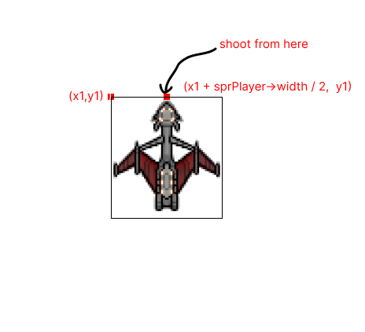
Whenever space key is pressed we add a new Bullet to the vector with values set to
x = fPlayerPostionX + sprPlayer->width / 2
y = fPlayerPositionY
dead = false
here fPlayerPositionX is the top left corner of the player's sprite, to move to the
center of image we should add up half the width of the image to its top left position.
Drawing the bullets
We will simply use a circle with the radius set to 1, as a bullet. Similar to drawing enemies, we will use a loop here, as we have a collection of bullets.
for (auto &elm: vBullet)
{
if (elm.y > -1 && !elm.dead)
{
FillCircle(elm.x, elm.y, 1, olc::RED);
}
}
We don't need to draw bullets that are gone away from the screen display area, so I used the if statement to ensure that.
Moving the Bullets
We need to move the bullets with some speed, so let us declare yet another private member
variable that represents the bullet velocity, I will name it fBulletVel, and set it as
float fBulletVel = 180.0f;
Moving the bullet means translating its position, since bullets will be fired upward we will be
subtracting the y coordinate of the bullet with its speed.
for (auto &elm: vBullet)
{
// only take care of bullets which are visible on the screen
if (elm.y > -1 && !elm.dead)
{
FillCircle(int(elm.x), int(elm.y), 1, olc::RED);
elm.y = elm.y - fBulletVel * fElapsedTime;
}
}
Remember that, we multiply fBulletVel with fElapsedTime as we discussed in chapter 4.
You can find all the codes here.
If you have updated the code as I mentioned, you should now be able to shoot bullets. But the bullet doesn't kill any enemy yet.
Next up we will implement collision detection for the Bullet and the enemy. Until then Have Fun!
Collision Detection - I
So far so good, we have a player that can move and shoot bullets. We also have enemy that pose threats to the player, the player needs to kill the enemy with the help of the bullets. So will be implementing this.
To kill the enemy we need to find out whether the bullet collided with the enemy or not. This is gonna be one of the tricky part of the entire program, But no problem I will try to explain everything.
Detecting the collision
It might sound simple but when the coordinate of both bullets and the enemy are same they will collide. That's right but not totally, this is because our enemy has width and touching any part of that enemy should be considered as a collision.
Let us first look at the image below: 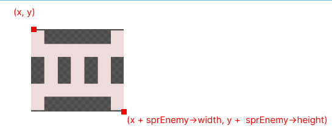
Colliding with such enemy means, the x coordinate of the bullet can have the value in the range from, enemy's x to x + sprEnemy->width.
But the bullet can be thought of a circle bounded inside a rectangle, in such way our bullet will also have a width and height.
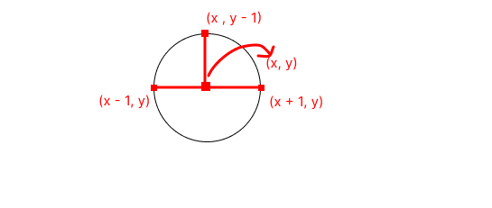
So For collision,
Bullet.y - 1 >= Enemy.y + sprEnemy->height, this means that the top most point of our bullet is in the same level or abovey + sprEnemy->heightBut this is not the only case, as:

The above image matches the above condition, but this is not the condition for collision, we have to check for the x coordinate as well.
Bullet.x + 1 >= Enemy.x, this means that the extreme right point of the bullet must be greater than Enemy'sxcoordinate. But this is also not the only case, as:
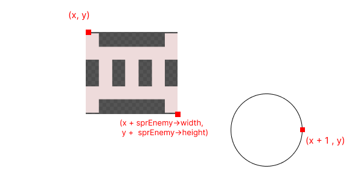
For the collision to take place (in X), we have to bound the extreme points of the bullet within Enemy.x to Enemy.x + sprEnemy->width
To do so, we should set the condition for left extreme point as well
Bullet.x - 1 <= Enemy.x + sprEnemy->width. But this is not the only condtion.
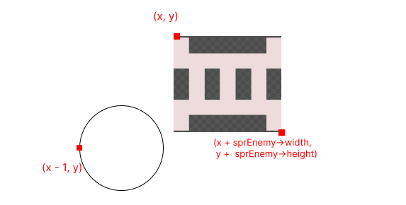
If we combine all these three condition, we will be able to detect the collision.
Combining all these three conditions we get
Bullet.y - 1 >= Enemy.y + sprEnemy->heightBullet.x + 1 >= Enemy.xBullet.x - 1 <= Enemy.x + sprEnemy->width
Implementing the Collision
Too much talk, now lets see some code in action, add the following line to the
OnUserUpdate method
for (auto &elm: vBullet) {
for (auto &enemy: vEnemy) {
if (!elm.dead && enemy.alive && elm.y > enemy.y && elm.x + 1 >= enemy.x &&
elm.x - 1 <= enemy.x + float(sprEnemy->width) &&
elm.y - 1 <= enemy.y + float(sprEnemy->height)) {
// kill both bullet and enemy.
elm.dead = true;
enemy.alive = false;
}
}
}
We used a nested loop because we have to check the collision for each element against each enemy.
Now you should see the player killing the enemy, but enemies are very weak for us now.
Next up we will give life to our enemy.
Adding Life to the Enemy
Our enemy do nothing as we now, I want the enemies to move towards our player, and when it collides with our player, the life count of the player reduces.
The Pythagoras Theorem
Since the enemy will be moving towards the player, we need to determine the path (or angle) at which enemy move. This is where the Pythagoras theorem comes in.
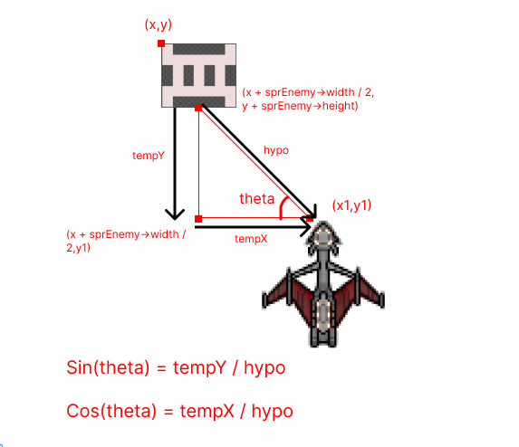
tempY is the vertical distance between the enemy and the player while tempX is the horizontal distance between the enemy and player.
To calculate the hypo (hypotenuse), we can use pythagoras theorem as,
hypo = sqrt(tempY^2 + tempX^2)
tempX and tempY can be calculated as:
tempX = x1 - (x + sprEnemey->width / 2);
tempY = y1 - (y + sprEnemy->height);
Note that the coordinates here are based on the above image.
So we can now calculate the value of sin(theta) and cos(theta).
From basic mathematics we have,
sin(theta) = height_of_perpendicular / hypotenuse
which in our case turns out to be,
sin(theta) = tempY / hypo
Similarly,
cos(theta) = base / hypotenuse
which in our case turns out to be,
cos(theta) = tempX / hypotenuse
What to do with the angles?
Remember that, when we moved to some X direction, we simply added the
speed to the x coordinate and when we moved to some Y direction, we
added the speed to the 'y' coordinate in case of the player.
But things slightly change here, since we are following the player, we have to choose the shortest path. i.e. We won't only move in single direction(either X or either Y), we have to move diagonally which means we have to travel some X and some Y distance at the same time. In fact we will travel with certain angle along the X and Y direction. Let us look at things in some detail, 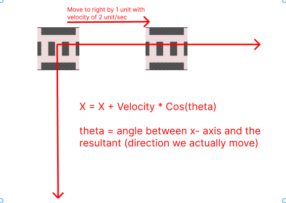
When we are moving horizontally, it looks like we are just adding the x coordinate to the velocity, but in fact, what we really do is,
X = X + Velocity * cos(theta)
Where theta = angle between x-axis and the direction we move in, which is 0.
so, X turns out to be,
X = X + Velocity * cos(0)
= X + Velocity
Similarly for the vertical movement, 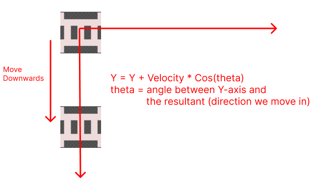
When we are moving vertically downwards, X coordinate remains constant and Y can be calculated as:
Y = Y + Velocity * Cos(theta)
where theta is the angle between Y-axis and the resultant.
So in this case,
Y = Y + Velocity * Cos(0)
= Y + Velocity
Now let us focus on diagonal movements, 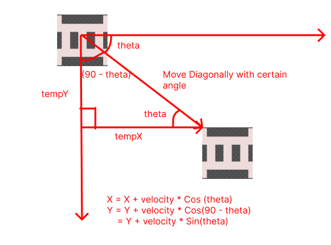
When we move diagonally, there is change in both X and Y coordinate, to calculate them, we will simply use the concept we used earlier,
X = X + Velocity * Cos(theta)
Y = Y + Velocity * Cos(90 - theta)
= Y + Velocity * Sin(theta)
Note that, When we move diagonally, the angle between Y-axis and the resultant
is (90 - theta), and Cos(90 - theta) = Sin(theta), so we multiply by Sin(theta) in case of Y.
Implementation
Too much talk till now, let us write some code then,
Update the OnUserUpdate method to have following snippets:
for(auto &elm : vEnemy){
if(elm.alive)
{
float tempX = (fPlayerPositionX + sprPlayer->width / 2
) - elm.x + sprEnemy->height + sprEnemy->width / 2
);
float tempY = (fPlayerPositionY - elm.y + sprEnemy->height);
// simple pythagoras theorem
float tempHypo = powf(tempX, 2) + powf(tempY, 2);
float Hypo = sqrtf(tempHypo);
float sinTheta = (tempY / Hypo);
float cosTheta = (tempX / Hypo);
elm.x = elm.x + fEnemyVel * cosTheta * fElapsedTime;
elm.y = elm.y + fEnemyVel * sinTheta * fElapsedTime;
break;
}
}
We iterated through every enemy in the Enemy vector and then
we calculated the values of tempX and tempYusing the techniques we discussed earlier,
and then calculated the hypotenuse and values of sin(theta) and cos(theta).
And then simply calculated the new coordinates.
elm.x = elm.x + fEnemyVel * cosTheta * fElapsedTime;
elm.y = elm.y + fEnemyVel * sinTheta * fElapsedTime;
Note the inclusion of fElapsedTime, anything in a motion
should have its velocity multiplied by fElapsedTime.
There is a break statement at the end of the end block,
this is because we only want to move our enemy one at a time.
When you run this program, you should see one of the enemy following the player: 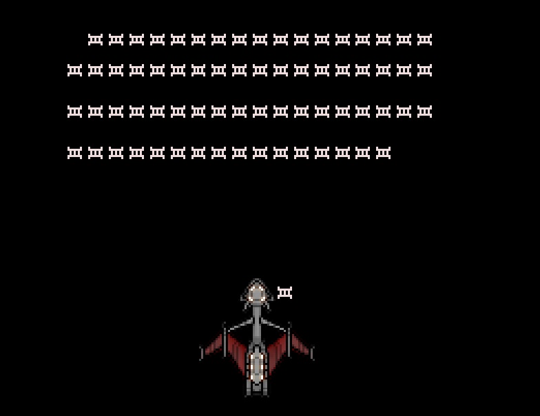
But we will need to kill the enemy when the collsion takes place, that is set for the next chapter.
Collision Detection - II
Earlier we talked about Collision Detection, where we detected the collsion between bullet and the enemy. This time we have to detect collision between the enemy and player.
The concepts and techniques are similar as before, 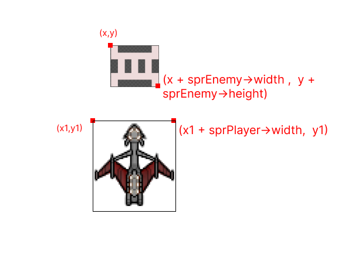
I won't be explaining too much, If you are still confused head back to chapter-7, where I explained in detail about the collision detection.
The conditions
x + sprEnemy->width >= x1x <= x1 + sprPlayer->widthy + sprEnemy->height >= y1
We check for the range of corners of the enemy, if they satisfy all of the above condition, we can say that they have collided.
Implementation
Update the OnUserUpdate method to contain following snippets,
for(auto &elm : vEnemy){
if(elm.alive)
{
// Same as before..
if (elm.x + sprEnemy->width >= fPlayerPositionX &&
elm.x <= fPlayerPositionX + sprPlayer->width &&
elm.y + sprEnemy->height >= fPlayerPositionY)
{
elm.alive = false;
}
break;
}
}
Above code justifies everything we talked earlier, nothing to explain here.
We set elm.alive = false to kill the enemy. So now you should see
enemies being killed on collision with the player.
Till now your OnUserUpdate method should look like this:
bool OnUserUpdate(float fElapsedTime) override
{
Clear(olc::BLACK);
DrawSprite(fPlayerPositionX, fPlayerPositionY, sprPlayer.get());
if (GetKey(olc::Key::LEFT).bHeld) {
fPlayerPositionX = fPlayerPositionX - fPlayerVel * fElapsedTime;
}
if (GetKey(olc::Key::RIGHT).bHeld) {
fPlayerPositionX = fPlayerPositionX + fPlayerVel * fElapsedTime;
}
if (GetKey(olc::Key::UP).bHeld) {
fPlayerPositionY = fPlayerPositionY - fPlayerVel * fElapsedTime;
}
if (GetKey(olc::Key::DOWN).bHeld) {
fPlayerPositionY = fPlayerPositionY + fPlayerVel * fElapsedTime;
}
if (GetKey(olc::Key::SPACE).bPressed) {
float ftempX = fPlayerPositionX;
float ftempY = fPlayerPositionY;
vBullet.emplace_back(Bullet{ftempX + float(sprPlayer->width) / 2, ftempY, false});
}
for (auto elm: vEnemy) {
if (elm.alive)
DrawSprite(elm.x, elm.y, sprEnemy.get());
}
for (auto &elm: vBullet) {
// only take care of bullets which are visible on the screen
if (elm.y > -1 && !elm.dead) {
FillCircle(int(elm.x), int(elm.y), 1, olc::RED);
elm.y = elm.y - fBulletVel * fElapsedTime;
}
}
for (auto &elm: vBullet) {
for (auto &enemy: vEnemy) {
if (!elm.dead && enemy.alive && elm.y > enemy.y && elm.x + 1 >= enemy.x &&
elm.x - 1 <= enemy.x + float(sprEnemy->width) &&
elm.y - 1 <= enemy.y + float(sprEnemy->height)) {
// kill both bullet and enemy.
elm.dead = true;
enemy.alive = false;
}
}
}
for(auto &elm : vEnemy){
if(elm.alive){
float tempX = ((fPlayerPositionX + float(sprPlayer->width) / 2
) - elm.x + float(sprEnemy->height) + float(sprEnemy->width) / 2
);
float tempY = (fPlayerPositionY - elm.y + float(sprEnemy->height));
// simple pythagoras theorem
float tempHypo = powf(tempX, 2) + powf(tempY, 2);
float Hypo = sqrtf(tempHypo);
float sinTheta = (tempY / Hypo);
float cosTheta = (tempX / Hypo);
elm.x = elm.x + fEnemyVel * cosTheta * fElapsedTime;
elm.y = elm.y + fEnemyVel * sinTheta * fElapsedTime;
if (elm.x + sprEnemy->width >= fPlayerPositionX &&
elm.x <= fPlayerPositionX + sprPlayer->width &&
elm.y + sprEnemy->height >= fPlayerPositionY)
{
elm.alive = false;
}
break;
}
}
return true;
}
Next up we will add Scoreboard and implement the concept of life for out Player.
Scoreboard and the Concept of Life
We are nearly at the end of the book now, we can move the player, shoot the threatful enemies, Let us now work out for the Scoreboard and implement the concept of life.
The Rule of the game is simple, you kill a enemy you get 5 points, you collide with the enemy your life reduces by 1, since collision kills the enemy, you will also gain those points.
To store the score and life count, add two new variables to the private member field of the class,
private:
int score = 0;
int life_count = 3;
Displaying the Score:
We will use the DrawString function to display the score, Update OnUserUpdate function to,
DrawString(0, 5, "SCORE:" + std::to_string(score));
We also need to update the score, when the enemy is killed, A enemy is killed when
- The bullet strikes the enemy
- The enemy collides with the player.
We now just need to add the following line where the above conditions are satisfied.
score = score + 5;
We also need to reduce the life_count by 1 when
- The enemy collides with the player
So just add the following line where the above condition matches in the OnUserUpdate function.
life_count = life_count - 1;
Drawing the Life Sprite
We will use the sprite below to represent the life count of a player

First we need to create a private member variable, sprLife to store a pointer to object
of type olc::Sprite
std::unique_ptr<olc::Sprite> sprLife;
and then on OnUserUpdate method we assign sprLife as:
bool OnUserCreate() override
{
produceEnemy();
sprPlayer = std::make_unique<olc::Sprite>("/home/abhilekh/Downloads/player.png");
sprEnemy = std::make_unique<olc::Sprite>("/home/abhilekh/Downloads/enemy.png");
sprLife = std::make_unique<olc::Sprite>("/home/abhilekh/Downloads/life.png");
return true;
}
To draw this sprite, we will use DrawSprite method, but the number of sprites to be displayed
depends on the life_count, so will use a for loop here,
// load life sprite..
for (int i = 0; i < life_count; ++i) {
DrawSprite(270 + sprLife->width + 25 * i, 5, sprLife.get());
}
We just passed in the x, y coordinate where the sprite is to be drawn and the
pointer to the object of type olc::Sprite.
Now if you compile and run the program, you should see something like this 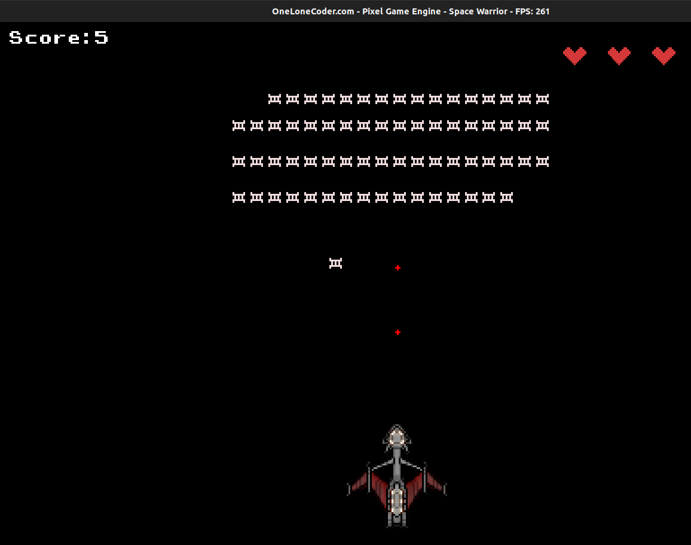
All the codes till now, can be found here
Next up we will work on polishing the game.